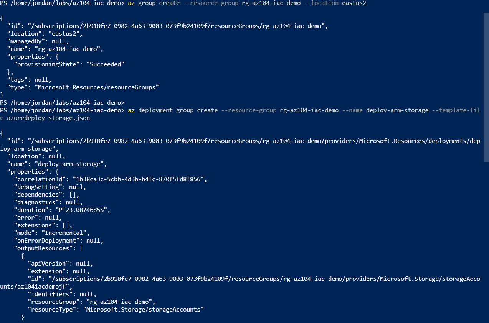
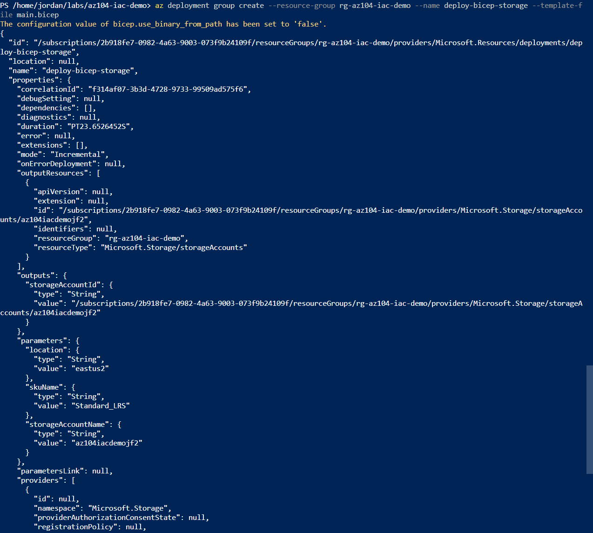
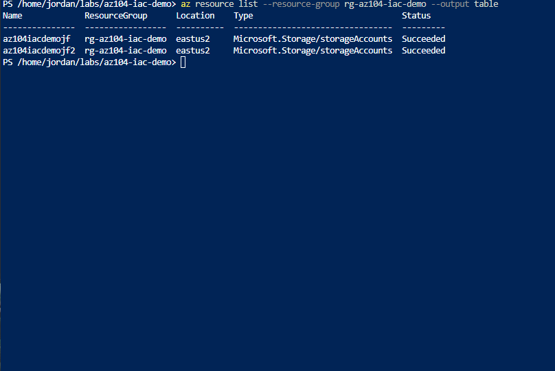
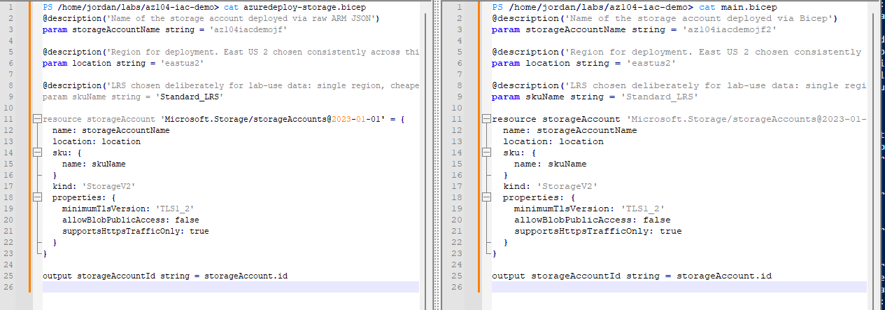

Deployed the same storage account resource two ways in the same resource group: once with a raw ARM JSON template, once with the equivalent Bicep file. The point wasn't the storage account itself, it was feeling the authoring difference firsthand and confirming that Bicep is a friendlier syntax layer over the same ARM deployment engine, not a separate one.
The previous Compute lab (3.1) already fought through a real regional VM quota issue, and this lab isn't about the deployed resource, it's about the authoring experience of ARM JSON versus Bicep. A storage account is free-tier, avoids re-triggering that East US 2 VM sizing story, and keeps this lab's cost at zero while still deploying a real, non-trivial resource with several configurable properties worth comparing across both syntaxes.
The whole point of this lab is to feel the pain before being told it exists. Starting in Bicep would have meant taking "Bicep is easier" on faith rather than experiencing the verbose parameter blocks, the resourceId() function-call syntax, and the schema boilerplate that Bicep exists specifically to eliminate. Writing ARM JSON first, then Bicep, made the size and readability difference concrete rather than something to just accept as received wisdom.
Giving the ARM-deployed and Bicep-deployed storage accounts different names (az104iacdemojf and az104iacdemojf2) let both deployments coexist in the same resource group at the same time, which made the resource-group-overview screenshot a direct side-by-side comparison instead of a before-and-after shot that required deleting one deployment before creating the other.
Deployed the same resource twice, once per template language, and compared the results.
az bicep decompile against the original ARM JSON and compared the auto-generated Bicep file against the hand-written one



"If you can build it again tomorrow without looking at yesterday's code, you've learned it. If you need to copy and paste it again, you've only completed a tutorial."
I am learning Infrastructure as Code deliberately, specifically Terraform and Bicep, rather than treating them as copy-paste snippets. This particular lab is itself an ARM-versus-Bicep comparison, so the two templates below are the full artifacts from the lab rather than a separate showcase - they reflect actual understanding of every property set, not reproduced boilerplate.
Same resource, same properties, roughly half the lines. No $schema URL to remember, no "type": "string" wrappers around every parameter, no resourceId() function-call syntax for something that's just storageAccount.id once a symbolic reference exists.
mkdir -p to create parent directories were all small but real friction points working in this environment.